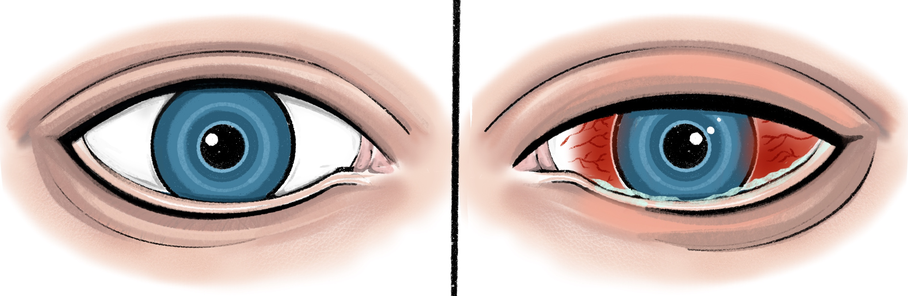

Question: Is the condition unilateral or bilateral?

Unilateral red eye
Only one eye appears to be affected
Bilateral red eyes
Both eyes appear to be affected
Please note: Some conditions can be sequential or asymmetric. Follow the "Bilateral" branch if the 'Unilateral' branch doesn't appear to fit the clinical picture